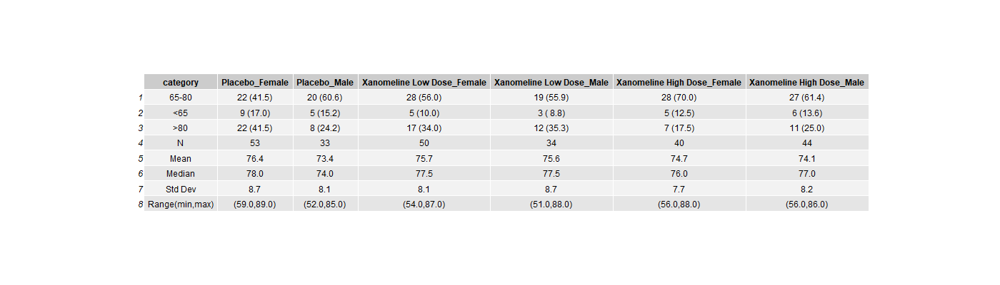
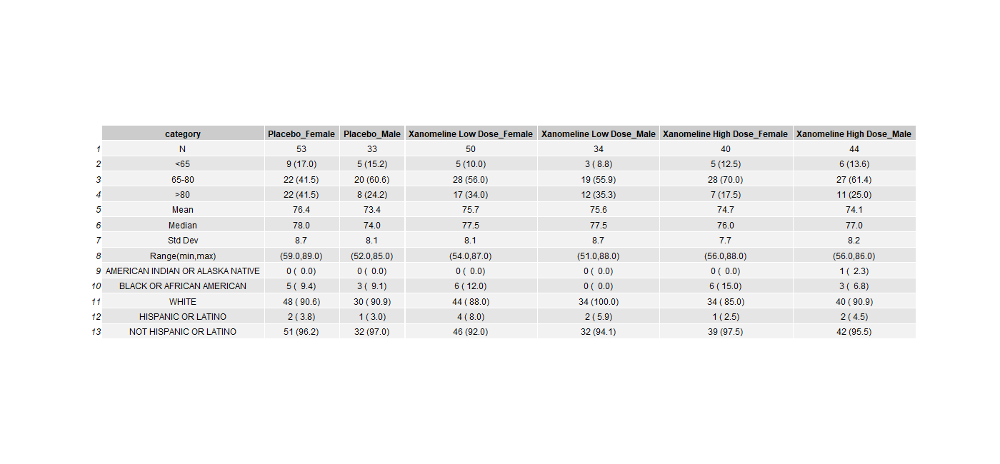

For these projects we are using anonymized CDISC datasets, which can be found here: https://github.com/phuse-org/phuse-scripts/tree/master/data/adam/cdisc
4.2 How to use this document:
In this document you’ll see code chunks (typically on a light grey background) and text. This is an example of an “Rmarkdown” document. You can write and run code within the document and the results will be presented underneath each code chunk. You should follow the instructions as written in the text, amending the code chunks, then running them to produce the outputs as instructed.
In this project we will be taking our code from Projects 2 and 3 and combining them to create output similar to that of our demog reference table
In this project we are working towards creating a demography summary table similar to this one: . After completing the challenge, the updated table should be similar to this one:
For steps 1-7 we will be re-doing the code we did in Projects 2 and 3. We will not be breaking it up and explaining the code for these steps since this is taken directly from Projects 2 and 3. You can refer to those trainings for a full explanation of the code and logic used here.
Setup of ADSL_EFF dataframe
library(tidyverse)
── Attaching core tidyverse packages ──────────────────────── tidyverse 2.0.0 ──
✔ dplyr 1.1.4 ✔ readr 2.1.5
✔ forcats 1.0.0 ✔ stringr 1.5.1
✔ ggplot2 3.5.2 ✔ tibble 3.3.0
✔ lubridate 1.9.4 ✔ tidyr 1.3.1
✔ purrr 1.0.4
── Conflicts ────────────────────────────────────────── tidyverse_conflicts() ──
✖ dplyr::filter() masks stats::filter()
✖ dplyr::lag() masks stats::lag()
ℹ Use the conflicted package (<http://conflicted.r-lib.org/>) to force all conflicts to become errors
There are often cases where there are zero counts within categories. We need to find a way to handle these correctly.
BTW - Here we’re using the function tribble() to create a little toy dataset. tribble works like the datalines or cards statements in SAS. You define data values (columns, rows) inline.
# A tibble: 4 × 4
# Groups: TRT01AN, TRT01A, SEX [4]
TRT01AN TRT01A SEX n
<dbl> <chr> <chr> <int>
1 1 Placebo F 1
2 1 Placebo M 1
3 2 Active F 2
4 3 Comparator M 2
Note that we don’t get 6 rows. Comparator + Female (“F”) is missing, as is Active + Male (“M”).
You can perform some juggling and arbitrary fixing here and there, but there’s another way using complete. First calculate the counts, THEN you need to ungroup THEN you can apply the complete. nesting says “take the values that appear in the data…” while things outside nesting in the complete function expand all possible values of SEX with the nested values. The fill = list(n=0) says that for any missing values (where there isn’t data) fill the n variable with the value = 0.
# A tibble: 6 × 4
TRT01AN TRT01A SEX n
<dbl> <chr> <chr> <int>
1 1 Placebo F 1
2 1 Placebo M 1
3 2 Active F 2
4 2 Active M 0
5 3 Comparator F 0
6 3 Comparator M 2
BTW - the complete function is ACTUALLY a wrapper around expand, left_join, replace_na functions. So yes, you can do the individual steps if you like, OR you can use the function…
Calculating counts for Age Groups (Challenge 1) We calculate counts per age group, and merge them together, along with the gender counts that were created in project 2
In myData below, if we sort by age then R puts the age category “>=65” first. This is because R sorts character variables alphanumerically, so “>” comes before “1”. (This may or may not occur depending on your version of R. Newer versions will actually sort it correctly!)
# A tibble: 3 × 2
ID age
<dbl> <chr>
1 1 18-44
2 3 45-64
3 2 >=65
Factors in R allow you to define discrete levels of a variable and the ordering of those levels. Factors were originally used in R to define the ordering of treatment labels and which treatment to use as the base level for constructing contrasts in statistical comparisons. But they are also useful for the purpose of rearranging elements in a user-defined order. Here we define age categories for age groups from age zero to over 65. Even if the data doesn’t have one of those age categories, it will still respect the levels and ordering. This means that, in defensive programming terms, we allow for future age categories that we haven’t seen in our data.
# A tibble: 5 × 7
category Placebo_Female Placebo_Male `Xanomeline Low Dose_Female`
<chr> <chr> <chr> <chr>
1 N 46 33 47
2 Mean 76.1 73.4 76.4
3 Median 77.5 74.0 78.0
4 Std Dev 8.5 8.1 7.6
5 Range(min,max) (59.0,88.0) (52.0,85.0) (56.0,87.0)
# ℹ 3 more variables: `Xanomeline Low Dose_Male` <chr>,
# `Xanomeline High Dose_Female` <chr>, `Xanomeline High Dose_Male` <chr>
Project 4 . Now we combine the two output dataframes that we created above. We are going to use the bind_rows function to join together two dataframes (separated by commas). Bind_rows is a lot like a SET statement in SAS, and is used to bind multiple dataframes, a list, or a list of dataframes into one.
This will resemble the final demog table when output.
age_cat - contains counts and percent for age groups x gender x treatment
agestat_cat - contains summary statistics for gender x treatment
Note: When row binding, columns must match in variable name. We don't have any missing values, but it we did, those columns would be filled with 'NA' values.
4.3 Challenges: Take the following actions to match with the Demographic table.
Reorder the age variables to be in the correct order (<65, 65-80, >80)
Move N before Age- categories.
Add Ethnicity and Race.
Save the .RMD file on your desktop and click on the “Knit” button at the top of the file to render an HTML version of this document.